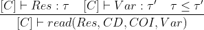
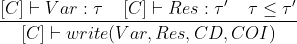

Adding operations on resources
- We expanded the language with operations on resources (e.g. files, sensors...)
- Three new language constructs:
- new(Res, CD, COI, LRes)
- read(Res, CD, COI, Var)
- write(Var, Res, CD, COI)
Access control (Chinese wall model)
- Organize resources in conflict of interest classes (e.g. banks) and company datasets (e.g. Barclays)
- History-based
Access control (Chinese wall model)
- S can read O if:
- S already read something in CD(O)
- S never read anything in COI(O)
- S can write O if:
- S can read O
- S never read O' in the same COI of O and different CD
Information flow
- Operations on resources could be used to leak information if not handled properly
- Example:
% x is a ts variable
% f is a l file
write(x, _, _, f).
Information flow
- Add two new rules to the type system
-

-
